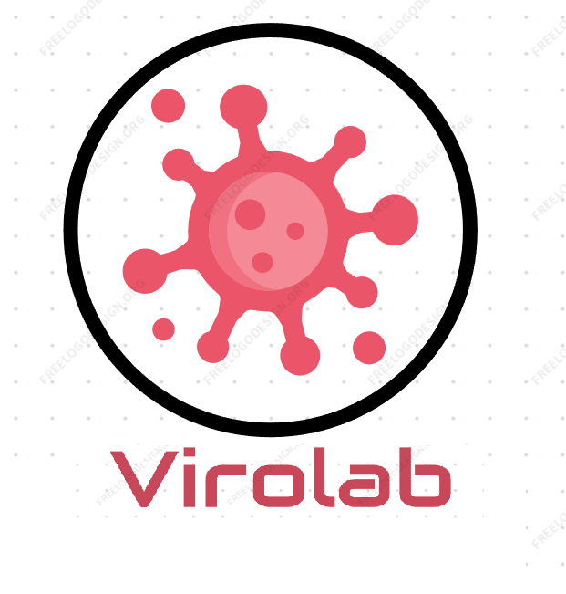

Laboratorio de Virología Agrícola del CICESE
Diagnóstico molecular de virus y patógenos asociados a cultivos de importancia regional y nacional

Estudiamos problemas microbiológicos en áreas básicas contemporáneas de biología celular y molecular, así como de resolver problemas microbiológicos vitales para la economía de la región en sus aspectos agrícolas, pecuarios e industriales.